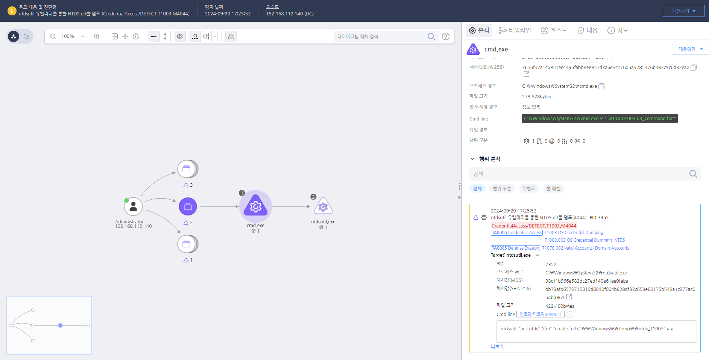

MITRE ATT&CK 액션을 기준으로 대응 방안을 작성
TargetProcess = "ntdsutil.exe" AND Cmdline = "ac i ntds" AND Cmdline = "create"

노출된 계정의 비밀번호를 변경합니다.
자격 증명 보호
C:\Windows\NTDS\ 경로의 접근을 제한합니다. 보안 솔루션 강화
ntdsutil, vssadmin, esentutl 등의 NTDS 덤핑 관련 명령어 실행을 탐지합니다. 이벤트 로깅 및 감사 정책 강화
4662, 4672, 4724, 5136)를 모니터링합니다. vssadmin, ntdsutil, dsamain 등의 명령 실행을 분석하고 경고를 생성합니다. 권한 제어
AdminSDHolder 보호를 강화하고, 도메인 컨트롤러의 Replicating Directory Changes 권한을 최소화합니다. 레지스트리 및 시스템 설정 보호
vssadmin delete shadows 명령을 비활성화하거나 사용 권한을 제한합니다. SeBackupPrivilege, SeRestorePrivilege를 비관리자 계정에 할당하지 않도록 설정합니다. 네트워크 트래픽 모니터링
MS-DRSR 프로토콜 관련 비정상적인 트래픽을 탐지하여 차단합니다. Action 실행시 함께 영향을 받는 다른 Techniqes
| ATT&CK |
|---|
| T1003.003 |
| D3FEND |
|---|
| D3-FAPA File Access Pattern Analysis |
| D3-RIC Reissue Credential |
| D3-SCP System Configuration Permissions |